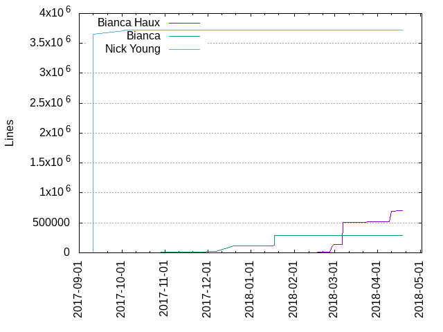
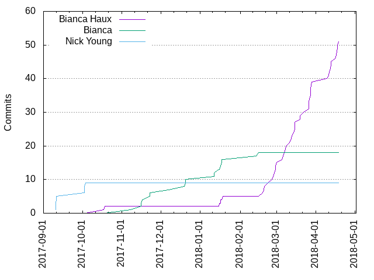

Authors
| Author | Commits (%) | + lines | - lines | First commit | Last commit | Age | Active days | # by commits |
|---|
| Bianca Haux | 51 (65.38%) | 702722 | 582270 | 2017-10-18 | 2018-04-19 | 182 days, 21:18:33 | 35 | 1 |
| Bianca | 18 (23.08%) | 293089 | 110103 | 2017-11-08 | 2018-02-16 | 99 days, 21:53:10 | 13 | 2 |
| Nick Young | 9 (11.54%) | 3718075 | 1477 | 2017-09-11 | 2017-10-04 | 22 days, 21:39:32 | 3 | 3 |


| Month | Author | Commits (%) | Next top 5 | Number of authors |
|---|
| 2018-04 | Bianca Haux | 12 (100.00% of 12) | | 1 |
| 2018-03 | Bianca Haux | 27 (100.00% of 27) | | 1 |
| 2018-02 | Bianca Haux | 7 (77.78% of 9) | Bianca | 2 |
| 2018-01 | Bianca | 6 (66.67% of 9) | Bianca Haux | 2 |
| 2017-12 | Bianca | 4 (100.00% of 4) | | 1 |
| 2017-11 | Bianca | 6 (100.00% of 6) | | 1 |
| 2017-10 | Nick Young | 4 (66.67% of 6) | Bianca Haux | 2 |
| 2017-09 | Nick Young | 5 (100.00% of 5) | | 1 |
| Year | Author | Commits (%) | Next top 5 | Number of authors |
|---|
| 2018 | Bianca Haux | 49 (85.96% of 57) | Bianca | 2 |
| 2017 | Bianca | 10 (47.62% of 21) | Nick Young, Bianca Haux | 3 |
| Domains | Total (%) |
|---|
| UoA.auckland.ac.nz | 51 (65.38%) |
|---|
| auckland.ac.nz | 26 (33.33%) |
|---|
| gmail.com | 1 (1.28%) |
|---|